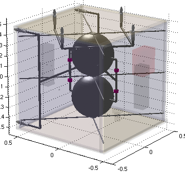

| New In Version 7.0 |  |
In Version 7 the toolbox now offers Formation Flying and Solar Sail modules as add-on products. The core toolbox has many diverse upgrades including unscented Kalman filters, an interface to the JPL ephemerides files (ex. DE405), and launch vehicle simulations. What's more, you can now view the headers of ALL the functions in the toolbox interactively using the online API.
Contents
Downloads
- Version 7 Tech Brief
- Version 7 Launch Simulations Tech Brief
- Version 7 Formation Flying Tech Brief
- Version 7 Launch and Early Operations Tech Brief
- Version 7 Three Axis Control Tech Brief
- Version 7 Deep Space Navigation Sensor Tech Brief
Some of the new features in v7 include:
- Launch vehicle simulations in 2D and 3D coordinates.
- Reentry vehicle simulations in cartesian and flight path angle coordinates.
- Close maneuvering using A* search algorithms.
- Nuclear propulsion system analysis functions.
- Unscented Kalman filters for state and parameter estimation.
- Ephemeris calculation including astronomical almanac and JPL ephmerides.
- New environmental models including magnetic fields for many planets.
- Distributed planetary albedo function.
- Fault detection including parity space and online approximators.
- Trajectory optimization using indirect methods.
- Plasma propulsion functions.
- Isothermal spacecraft model.
- Thermal radiator and heat shield properties.
- Radar and Ladar link budget analysis.
- New and improved spacecraft control simulations.
- Nonlinear equation solver for multiple equations.
- New functions for optical sensors.
- System failure probability function.
- Object transparency in viewing CAD models.
CAD Transparency
The new use of object transparency in the CAD models allows you to highlight specific components or subsystems, and virtually see "inside" your spacecraft. The image below shows the propulsion subsystem in reference to the rest of the spacecraft.
